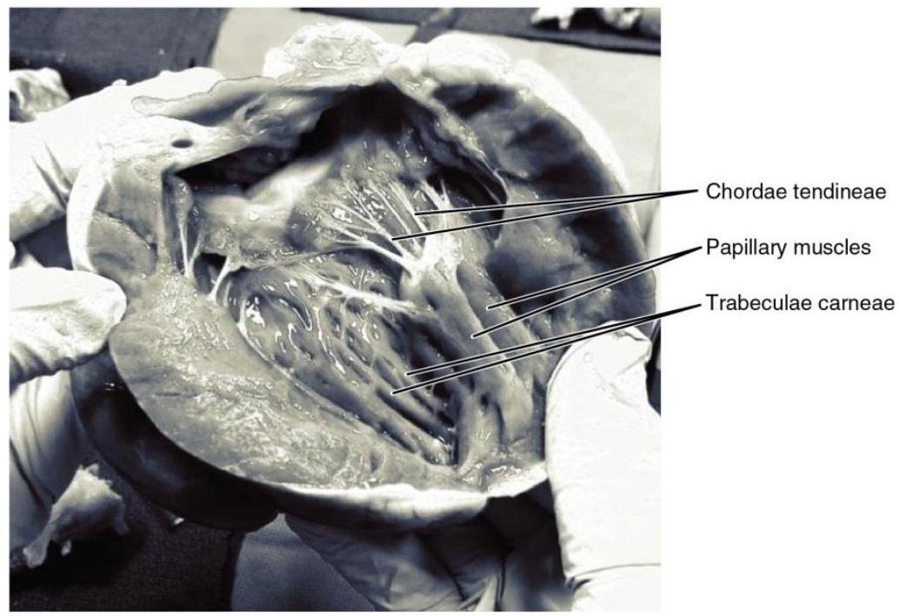
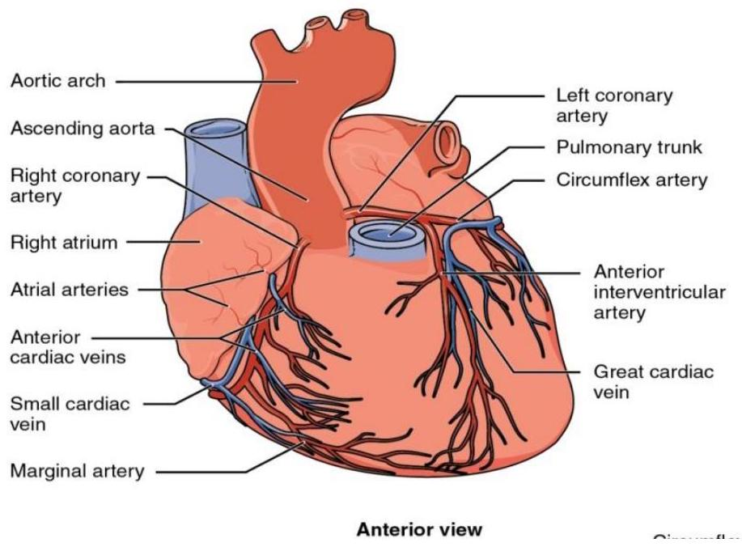

THE CARDIOVASCULAR SYSTEM
THE HUMAN HEART
HEART POSITION IN THE THORAX
Location of the heart
- The heart is located within the chest cavity between the lungs in the space known as the mediastinum,
- Behind and slightly to the left of the breastbone (sternum)
- Its center is located about 1.5 cm to the left of the midsagittal plane.
- Above the diaphragm
- A double-layered membrane called the pericardium surrounds the heart
- Within the mediastinum, the heart is separated from the other mediastinal structures by a tough membrane known as the pericardium, or pericardial sac, and sits in its own space called the pericardial cavity.
- It is important to remember the position and orientation of the heart when placing a stethoscope on the chest of a patient and listening for heart sounds.
- The slight deviation of the apex to the left is reflected in a depression in the medial surface of the inferior lobe of the left lung, called the cardiac notch.
Surface topography of the heart
Heart located between
Heart borders
- Right border - Right atrium.
- Inferior border - Left ventricle and right ventricle.
- Left border - Left ventricle (and some of the left atrium)
- Superior border - Right and left atrium and the great vessels.
Shape and Size of the Heart
- The shape of the heart is similar to an inverted cone
- Rather broad at the superior surface and tapering to the apex.
- A typical heart is approximately the size of a clenched fist: 12 cm in length, 8 cm wide, and 6 cm in thickness.
- Given the size difference between most members of the sexes, the weight of a female heart is approximately 250-300 grams, and the weight of a male heart is approximately 300-350 grams
Chambers of the Heart
The heart has four chambers:
- The right atrium receives blood from the veins and pumps it to the right ventricle.
- The right ventricle receives blood from the right atrium and pumps it to the lungs, where it is loaded with oxygen.
- The left atrium receives oxygenated blood from the lungs and pumps it to the left ventricle.
- The left ventricle (the strongest chamber) pumps oxygen-rich blood to the rest of the body. The left ventricle's vigorous contractions create the blood pressure.
Membranes
- The membrane that directly surrounds the heart and defines the pericardial cavity is called the pericardium or pericardial sac.
- It also surrounds the "roots" of the major vessels, or the areas of closest proximity to the heart.
- The pericardium, which literally translates as "around the heart," consists of two distinct sublayers:
- Outer fibrous pericardium (The fibrous pericardium is made of tough, dense connective tissue that protects the heart and maintains its position in the thorax)
- Inner serous pericardium. (More delicate serous pericardium consists of two layers: the parietal pericardium, which is fused to the fibrous pericardium, and an inner visceral pericardium, or epicardium, which is fused to the heart and is part of the heart wall.)
- The pericardial cavity, filled with lubricating serous fluid, lies between the epicardium and the pericardium.
Layers
- The wall of the heart is composed of three layers of unequal thickness.
- From superficial to deep, these are the epicardium, the myocardium, and the endocardium
- The outermost layer of the wall of the heart is also the innermost layer of the pericardium.
- The middle and thickest layer is the myocardium, made largely of cardiac muscle cells. It is built upon a framework of collagenous fibers, plus the blood vessels that supply the myocardium and the nerve fibers that help regulate the heart.
- It is the contraction of the myocardium that pumps blood through the heart and into the major arteries.
- Although the ventricles on the right and left sides pump the same amount of blood per contraction, the muscle of the left ventricle is much thicker and better developed than that of the right ventricle.
- The innermost layer of the heart wall, the endocardium, is joined to the myocardium with a thin layer of connective tissue. The endocardium lines the chambers where the blood circulates and covers the heart valves. It is made of simple squamous epithelium called endothelium, which is continuous with the endothelial lining of the blood vessels
Internal Structure of the Heart
Septa of the Heart
- A septum (plural = septa) refers to a wall or partition that divides the heart into chambers.
- The septa are physical extensions of the myocardium lined with endocardium.
- Located between the two atria is the interatrial septum.
- Normally in an adult heart, the interatrial septum bears an oval-shaped depression known as the fossa ovalis, a remnant of an opening in the fetal heart known as the foramen ovale.
- Between the two ventricles is a second septum known as the interventricular septum. Unlike the interatrial septum, the interventricular septum is normally intact after its formation during fetal development. It is substantially thicker than the interatrial septum, since the ventricles generate greater pressure when they contract.
- The septum between the atria and ventricles is known as the atrioventricular septum. It is marked by the presence of four openings that allow blood to move from the atria into the ventricles and from the ventricles into the pulmonary trunk and aorta.
Valves
- Located in each of these openings between the atria and ventricles is a valve, a specialized structure that ensures one-way flow of blood.
- The heart has 4 valves:
- The mitral valve and tricuspid valve, which control blood flow from the atria to the ventricles. (atrioventricular valves.)
- The aortic valve and pulmonary valve, which control blood flow out of the ventricles. (semilunar valves.)
The Right Atrium
The right atrium serves as the receiving chamber for blood returning to the heart from the systemic circulation.
The two major systemic veins, the superior and inferior venae cavae, and the large coronary vein called the coronary sinus that drains the heart myocardium empty into the right atrium.
The superior vena cava drains blood from regions superior to the diaphragm: the head, neck, upper limbs, and the thoracic region. It empties into the superior and posterior portions of the right atrium.
The inferior vena cava drains blood from areas inferior to the diaphragm: the lower limbs and abdominopelvic region of the body. It, too, empties into the posterior portion of the atria, but inferior to the opening of the superior vena cava.
The Right Ventricle
The right ventricle receives blood from the right atrium through the tricuspid valve. Each flap of the valve is attached to strong strands of connective tissue, the chordae tendineae, literally "tendinous cords,"
They are composed of approximately 80 percent collagenous fibers with the remainder consisting of elastic fibers and endothelium. They connect each of the flaps to a papillary muscle that extends from the inferior ventricular surface
The walls of the ventricle are lined with trabeculae carneae, ridges of cardiac muscle covered by endocardium.
When the myocardium of the ventricle contracts, pressure within the ventricular chamber rises. Blood, like any fluid, flows from higher pressure to lower pressure areas, in this case, toward the pulmonary trunk and the atrium. To prevent any potential backflow, the papillary muscles also contract, generating tension on the chordae tendineae. This prevents the flaps of the valves from being forced into the atria and regurgitation of the blood back into the atria during ventricular contraction.
The Figure below shows papillary muscles and chordae tendineae attached to the tricuspid valve.
The Left Atrium
- After exchange of gases in the pulmonary capillaries, blood returns to the left atrium high in oxygen via one of the four pulmonary veins.
- While the left atrium does not contain pectinate muscles, it does have an auricle that includes these pectinate ridges. Blood flows from the pulmonary veins back into the atrium, which acts as the receiving chamber.
- Toward the end of the ventricular relaxation period, the left atrium will contract, pumping blood into the ventricle.
- The opening between the left atrium and ventricle is guarded by the mitral valve.
The Left Ventricle
The muscular layer is much thicker in the left ventricle compared to the right
The mitral valve is connected to papillary muscles via chordae tendineae. There are two papillary muscles on the left-the anterior and posterior-as opposed to three on the right. (hence bicuspid valve and tricuspid valve)
The left ventricle is the major pumping chamber for the systemic circuit; it ejects blood into the aorta through the aortic semilunar valve.
Heart Valve Structure and Function
A transverse section through the heart slightly above the level of the atrioventricular septum reveals all four heart valves along the same plane (Figure below).
The valves ensure unidirectional blood flow through the heart.
i) Tricuspid valve
Between the right atrium and the right ventricle is the right atrioventricular valve, or tricuspid valve.
It typically consists of three flaps, made of endocardium reinforced with additional connective tissue.
The flaps are connected by chordae tendineae to the papillary muscles, which control the opening and closing of the valves.
ii) Pulmonary valve
Emerging from the right ventricle at the base of the pulmonary trunk is the pulmonary semilunar valve, or the pulmonary valve; it is also known as the pulmonic valve or the right semilunar valve.
When the ventricle relaxes, the pressure differential causes blood to flow back into the ventricle from the pulmonary trunk. This flow of blood fills the pocket-like flaps of the pulmonary valve, causing the valve to close and producing an audible sound.
Unlike the atrioventricular valves, there are no papillary muscles or chordae tendineae associated with the pulmonary valve.
iii) Bicuspid valve (mitral valve)
Located at the opening between the left atrium and left ventricle is the mitral valve, also called the bicuspid valve or the left atrioventricular valve.
Structurally, this valve consists of two cusps , compared to the three cusps of the tricuspid valve.
The two cusps of the mitral valve are attached by chordae tendineae to two papillary muscles that project from the wall of the ventricle.
iv) Aortic valve
At the base of the aorta is the aortic semilunar valve, or the aortic valve, which prevents backflow from the aorta.
When the ventricle relaxes and blood attempts to flow back into the ventricle from the aorta, blood will fill the cusps of the valve, causing it to close and producing an audible sound.
Coronary Circulation
Like all other cells, a cardiomyocyte requires a reliable supply of oxygen and nutrients, and a way to remove wastes, so it needs a complex, and extensive coronary circulation.
Coronary Arteries
Coronary arteries supply blood to the myocardium and other components of the heart.
The first portion of the aorta after it arises from the left ventricle gives rise to the coronary arteries.
Coronary Veins
Coronary veins drain the heart and generally parallel the large surface arteries and drains the areas supplied by this vessel.
CONDUCTING SYSTEM OF THE HEART
It consists of specialized cardiac muscle present in the:
- Sinoatrial node,
- Atrioventricular node and
- Atrioventricular bundle along with its right and left terminal branches
- Purkinje fibers (specialized cardiac muscle fibers that form the conducting system of the heart).
a) Sinuatrial node:
It is located in the wall of the right atrium to the right of the opening of superior vena cava.
The sinuatrial node gives origin spontaneously to rhythmical impulses that spread in all direction through the cardiac muscle of the atria.
As a result, the atrial muscle contracts.
b) Atrioventricular node:
It is strategically placed in the lower part of the right atrium just above the attachment of the septal cusp of the tricuspid valve.
Through this node, the cardiac impulse is conducted from atria to the ventricles.
The speed of conduction of impulse through the atrioventricular node is very slow, which allows sufficient time for the atria to empty their blood into the ventricles completely.
c) Atrioventricular bundle:
It is also known as "the bundle of His".
It is the only pathway that connects the myocardium of the atria to the myocardium of the ventricles electrically. Thus it is the only route for transmission of impulse from atria into the ventricles.
The bundle descends and on reaching the muscular part of the septum, it divides into two branches, one for each ventricle.
The right bundle branch passes to the right ventricle and the left bundle branch passes to the left.
After this point, they become continuous with the fibers of Purkinje tissue.
d) Purkinje fibers:
Purkinje fibers carry the contraction impulse from both the left and right bundle branch to the myocardium of the ventricles.
Function of conducting system of heart:
- The conducting system of heart is responsible not only for generating rhythmical cardiac impulses but also for conducting these impulses rapidly throughout the myocardium of the heart. Thus it aids in coordinated and efficient contraction of different chambers of the heart.
- The activities of the conducting system of heart can be influenced by the autonomic nerve supply of heart. The parasympathetic nerves slow the rhythm and diminish the speed of conduction, while the sympathetic nerves have the opposite effect.
NERVE SUPPLY TO THE HEART
- Sinoatrial node
- Atrioventricular node
- Bundle of His
- Left bundle branch
- Left posterior fascicle
- Left-anterior fascicle
- Left ventricle
- Ventricular septum
- Right ventricle
- Right bundle branch
- The innervation of the heart refers to the network of nerves that are responsible for the functioning of the heart. The heart is innervated by sympathetic and parasympathetic fibres from the autonomic branch of the peripheral nervous system.
- The network of nerves supplying the heart is called the cardiac plexus. It receives contributions from the right and left vagus nerves, as well as contributions from the sympathetic trunk.
- These are responsible for influencing heart rate, cardiac output, and contraction forces of the heart.
- Parasympathetic efferent fibers - (Vagus nerve)
Function: reducing the heart rate, reducing the force of contraction of the heart, vasoconstriction of the coronary arteries - Sympathetic efferent fibers
Function: increasing heart rate, increasing the force of contraction of the myocardium
BLOOD FLOW THROUGH THE HEART
The right and left sides of the heart work together. The pattern described below is repeated over and over (heart rhythm), causing blood to flow continuously to the heart, lungs, and body to supply oxygen and nutrients to the body cells and to deliver waste products to organs that remove them from your body.
Right side of the heart
- Blood enters the heart through two large veins, the inferior and superior vena cava, emptying oxygen-poor blood from the body into the right atrium of the heart.
- As the atrium contracts, blood flows from your right atrium into your right ventricle through the open tricuspid valve.
- When the ventricle is full, the tricuspid valve shuts. This prevents blood from flowing backward into the atria while the ventricle contracts.
- As the ventricle contracts, blood leaves the heart through the pulmonic valve, into the pulmonary artery and to the lungs where it is oxygenated. Note that oxygen-poor or CO2 containing blood goes through the pulmonary artery to the lungs where CO 2 is exchanged for O 2 .
Left side of the heart (operating at the same time as the right side of the heart)
- The pulmonary vein empties oxygen-rich blood from the lungs into the left atrium of the heart.
- As the atrium contracts, blood flows from your left atrium into your left ventricle through the open mitral valve.
- When the ventricle is full, the mitral valve shuts. This prevents blood from flowing backward into the atrium while the ventricle contracts.
- As the ventricle contracts, oxygen-enriched blood leaves the heart through the aortic valve, into the aorta and to the arteries and eventually into veins to complete the blood circulation in your body.
THE CARDIAC CYCLE
At the beginning of the cardiac cycle, both the atria and ventricles are relaxed (diastole). Blood is flowing into the right atrium from the superior and inferior venae cavae. Blood flows into the left atrium from the four pulmonary veins. The two atrioventricular valves, the tricuspid and mitral valves, are both open, so blood flows unimpeded from the atria and into the ventricles. The two semilunar valves, the pulmonary and aortic valves, are closed, preventing backflow of blood into the right and left ventricles from the pulmonary trunk on the right and the aorta on the left.
Atrial Systole and Diastole
Contraction of the atria follows depolarization, represented by the P wave of the ECG. As the atrial muscles contract from the superior portion of the atria toward the atrioventricular septum, pressure rises within the atria and blood is pumped into the ventricles through the open atrioventricular (tricuspid, and mitral or bicuspid) valves. Atrial systole ends prior to ventricular systole, as the atrial muscle returns to diastole.
Ventricular Systole
- Ventricular systole follows the depolarization of the ventricles and is represented by the QRS complex in the ECG.
- Blood is pumped from the heart, pushing open the pulmonary and aortic semilunar valves. Pressure generated by the left ventricle will be appreciably greater than the pressure generated by the right ventricle. Nevertheless, both ventricles pump the same amount of blood.
Ventricular Diastole
- Ventricular relaxation, or diastole, follows repolarization of the ventricles and is represented by the T wave of the ECG. As the ventricular muscle relaxes, pressure on the remaining blood within the ventricle begins to fall. The semilunar valves close to prevent backflow into the heart
- As the ventricular muscle relaxes, pressure on the blood within the ventricles drops even further. Eventually, it drops below the pressure in the atria. When this occurs, blood flows from the atria into the ventricles, pushing open the tricuspid and mitral valves. As pressure drops within the ventricles, blood flows from the major veins into the relaxed atria and from there into the ventricles.
- Both chambers are in diastole, the atrioventricular valves are open, and the semilunar valves remain closed. The cardiac cycle is complete.
An electrocardiogram is a recording of the electrical activity of the heart
HEART SOUNDS
Heart sounds are the noises generated by the beating heart and the resultant flow of blood through it. Specifically, the sounds reflect the turbulence created when the heart valves snap shut.
In cardiac auscultation, an examiner may use a stethoscope to listen for these unique and distinct sounds that provide important auditory data regarding the condition of the heart.
In healthy adults, there are two normal heart sounds, often described as a lub and a dub (or dup), that occur in sequence with each heartbeat.
- These are the first heart sound (S1) and second heart sound (S2), produced by the closing of the atrioventricular valves and semilunar valves, respectively.
- In addition to these normal sounds, a variety of other sounds may be present including heart murmurs, adventitious sounds, and gallop rhythms S3 and S4. (gallop - abnormal rhythm of the heart on auscultation)
- Heart murmurs are generated by turbulent flow of blood. Turbulence may occur inside or outside the heart; if it occurs outside the heart then the turbulence is called Bruit.
CARDIAC OUTPUT, STROKE VOLUME AND HEART RATE
Cardiac output
Cardiac output (CO) is the total volume of blood pumped by the heart per minute. It is the product of blood pumped by each heart beat (stroke volume or SV) and the number of beats (heart rate).
Stroke Volume
Stroke Volume (SV) is the volume of blood in millilitres ejected from the each ventricle due to the contraction of the heart muscle.
Heart rate
The heart rate is one of the 'vital signs,' or the important indicators of health in the human body.
It measures the number of times per minute that the heart contracts or beats.
Venous return
Venous return (VR) is the flow of blood back to the heart.
It normally limits cardiac output
BLOOD PRESSURE
Is pressure of flow of blood against arterial wall resistance
The blood pressure is the pressure of the blood within the arteries. It is produced primarily by the contraction of the heart muscle.
It's measurement is recorded by two numbers. The first (systolic pressure) is measured after the heart contracts and is highest. The second (diastolic pressure) is measured before the heart contracts and lowest.
Factors that affect/influence BP
- Peripheral vascular resistance
- Vessel elasticity
- Blood volume
- Cardiac output
- Elasticity of vessels walls
- Emotional State- Stress or anxiety can cause large increases in blood pressure
- Substance use e.g smoking and alcohol intake